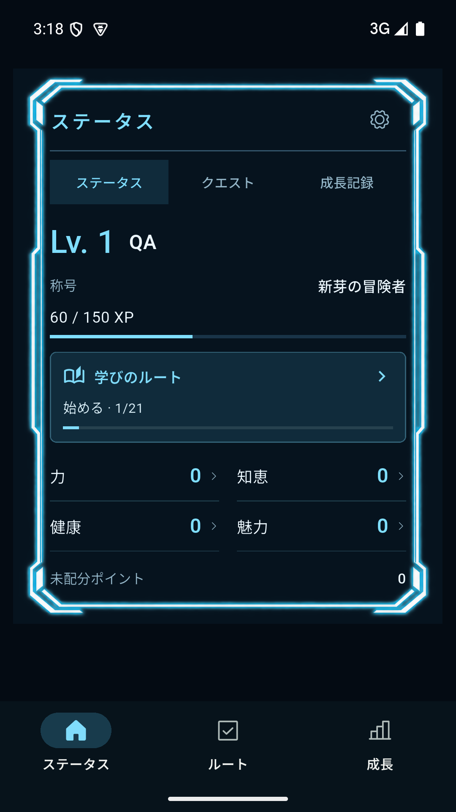

내 레벨과 능력치
이름·레벨·XP·칭호와 네 가지 게임 능력치를 한눈에 봅니다. 현실의 건강이나 실제 능력을 측정하는 수치는 아닙니다.
웹툰 속 주인공처럼 나의 이름, 레벨, XP와 능력치를 먼저 확인하세요. 학습·정리·가벼운 움직임·관계의 네 가지 루트에서 다음 행동을 고르세요. 실행한 일과 남긴 메모가 내 진도와 상태창에 쌓입니다.
새 상태창 버전은 아직 배포 전입니다. Google Play 비공개 테스트와 유료 판매도 시작되지 않았습니다.

새 버전에서는 앱을 열 때 상태창이 먼저 나타납니다. 퀘스트는 상태창 안에서 고르고, 완료 뒤에는 저장된 XP와 성장 기록을 다시 확인합니다. 쉬는 날에도 이미 얻은 레벨과 XP를 깎지 않습니다.
이름·레벨·XP·칭호와 네 가지 게임 능력치를 한눈에 봅니다. 현실의 건강이나 실제 능력을 측정하는 수치는 아닙니다.
루트마다 21개 미션과 작은 행동 버전이 있습니다. 각 루트 첫 7개, 총 28개는 무료입니다. 실행한 뒤 메모를 남기고 다음 단계로 이어가세요.
지원 기기에서는 공개 모델을 따로 내려받아 기기에서 추천을 만들 수 있습니다. 모델 설치 없이도 기본 퀘스트를 이용합니다.
아래 기능은 배포 전 2.1.0+2015 후보에 구현되어 있습니다. Google Play 일회 구매로 제공하려면 상품 설정과 실제 결제·복원 검증이 더 필요합니다. 현재 공개 APK에서는 구매할 수 없으며, 판매가 시작되면 가격은 Google Play 구매 화면에서 확인할 수 있습니다.
기본 상태창·직접 퀘스트·일일 추천·각 루트 첫 7개 미션·기존 기록 열람·암호화 백업은 무료입니다. 확장팩은 XP나 능력치 보너스를 제공하지 않습니다. 리포트는 앱 안의 기록을 정리하며 현실의 능력 향상을 측정하지 않습니다. 후보 앱의 구매·복원 경로에는 Google 계정 연결이 필요하지만, 무료 사용에는 계정이 필요하지 않습니다. 확인된 유료 권한은 최대 7일간 오프라인으로 보관한 뒤 온라인에서 다시 확인합니다.
현재 공개된 무료 APK에는 세 편의 짧은 이야기가 있습니다. 상태창과 일상 퀘스트를 중심에 두고, 이야기는 원할 때 이어서 읽는 방향으로 새 버전을 다듬고 있습니다.
도시 미스터리
늘 지나치던 역에 없던 출구가 나타났습니다.
무림 수련
서두르지 않는 수련이 오늘의 한 걸음이 됩니다.
기록 탐사
작은 기록을 모아 지도에 없던 길을 찾습니다.
2.0.0-preview.1 · Android 8.0 이상 · ARM64
Google Play 출시본이 아닌 직접 설치용 APK입니다. 위에 보이는 새 상태창 화면과 확장팩은 이 파일에 포함되지 않습니다.
자동 업데이트는 없습니다. 다른 서명의 Play 버전으로 이동하려면 재설치가 필요할 수 있으므로, 앱 설정에서 무료 암호화 백업을 먼저 보관하세요.
Existing free Android ARM64 preview for Android 8+. Direct APK distribution, not a Google Play release. This free APK includes card expeditions without the optional AI model. The redesigned status screen and one-time pack shown above are not included in this APK. The unreleased 2.1.0+2015 candidate does not expose card expeditions or grant new card rewards. No purchases or ads in this preview. Optional on-device AI requires a separate approximately 2.59GB model. Keep an encrypted backup before moving to a differently signed Play build.
Life Questは、日々の小さな行動をクエストとして記録し、XPとアプリ内の能力値を振り返るAndroidアプリです。4つのルートに各21ミッションがあり、最初の7つずつは無料です。次の行動、小さくやる方法、集中タイマー、メモをつなげます。買い切りのLife Quest Completeは残りの56ミッション、外観3種、30/90日レポートと保存を含みます。現在はGoogle Playへの配信準備中です。
上の画像は新バージョンの実際の開発用画面です。現在ダウンロードできる無料APKにはカード探索がありますが、新バージョンの配信候補では探索画面と新しいカード報酬を提供しません。無料APKには新しいステータス画面と有料機能は入っていません。Google Playでのクローズドテスト・販売はまだ始まっていません。日本語のプライバシー案内とデータ・アカウント削除方法もご覧ください。
Life Quest turns small daily actions into quests and shows your recorded XP and in-app stats. The new build has four routes with 21 missions each, concrete small-action alternatives, a focus timer and route notes. The first 7 missions in every route are free. The optional one-time Life Quest Complete adds the remaining 56 missions, three looks, 30/90-day reports and exports.
The image above is from a real development build. The existing free APK includes card expeditions but does not include the redesigned status screen or paid features. The unreleased candidate does not expose card expeditions or grant new card rewards. Google Play closed testing and sales have not started.
四條路線，每條21個任務，前7個免費。從學習、整理空間、輕量活動與人際連結中選擇下一步，再用小行動版本、專注計時器和筆記持續累積。一次購買的Life Quest Complete包含後續56個任務、狀態外觀與報告匯出。目前尚未開始Google Play封閉測試或銷售；現有免費預覽APK也不包含這些新畫面。查看隱私說明、刪除方式與使用說明。
어떤 정보가 먼저 보여야 내 상태창 같을지, 공개 프리뷰에서는 어디에서 막혔는지 알려주세요.
문제 제보에는 기종·Android 버전·발생한 화면을 적어주시면 도움이 됩니다.
개발자 Log_Ian · logian621@gmail.com
이메일은 직접 보내야 접수됩니다. GitHub 이슈는 공개되므로 개인 목표·계정·백업 원본은 적지 마세요. 앱의 이용 기록은 자동으로 첨부되거나 전송되지 않습니다.
Feedback, AI suggestion concerns and deletion requests: email us. GitHub issues are public. Do not include passwords, personal goals or backup files.
최종 업데이트: 2026-10-03 · 운영자: Log_Ian
표시 이름, 시간·에너지·성장 분야·직접 입력한 목표, 퀘스트와 완료·피드백 이력, 루트 목표·진도·실행 메모, 집중 타이머의 시작·일시정지 시각, 레벨·능력치·인벤토리·던전·이야기 선택, 언어·소리·알림 설정을 앱의 기기 저장 공간에 보관합니다. 개인화 추천에는 최근 최대 90일 범위의 피드백 이력을 사용합니다. 홈 위젯을 사용하면 표시할 진행 정보가 위젯 저장 공간에도 남습니다.
2.1.0+2015 후보에서 탐험 화면과 신규 카드 보상이 보이지 않더라도, 이전 버전에서 만들어진 카드·완료 구역·진행 중 탐험 기록은 기기 프로필에 남을 수 있습니다. 화면에서 숨겨진다고 저장 기록이 자동으로 삭제되는 것은 아닙니다.
이 정보는 앱 기능과 개인화 추천에 사용합니다. 기본 기기 모드에서 개발자에게 전송하지 않으며, 사용자 기록으로 모델 가중치를 학습시키지 않습니다. 자동 클라우드 백업은 제공하지 않습니다. 설정에서 무료 암호화 백업 파일을 직접 만들고 다른 기기로 복원할 수 있습니다. 백업이 없으면 앱 데이터 삭제·앱 제거·기기 분실 시 진행을 잃을 수 있습니다.
직접 만드는 백업: 퀘스트·성장·완료한 던전·이야기 선택·개인화 이력을 사용자가 정한 비밀번호로 암호화합니다. 로그인 정보·구매 권한·진행 중 탐험·AI 모델은 제외합니다. 비밀번호는 개발자에게 보내거나 저장하지 않으며 잊으면 복구할 수 없습니다. 저장 위치로 클라우드 파일 서비스를 고르면 그 서비스에는 암호화된 파일이 전달됩니다. 파일 복원 전 확인을 받고, 직전 기록 한 벌과 중단 복원을 위한 임시 기록을 기기의 앱 전용 공간에 보관합니다. 이 기록들은 기기 프로필 삭제 시 함께 지워집니다. 직접 저장한 백업 파일은 앱 삭제 후에도 남으므로 저장 위치에서 직접 삭제해야 합니다.
루트의 목표·진도·메모는 선택한 프로필과 암호화 백업에 포함됩니다. 집중 타이머 상태와 완료 전 메모 초안은 기기에만 저장하고 백업에는 포함하지 않습니다. 미션을 완료하면 메모는 선택한 프로필의 실행 기록에 포함됩니다. 앱 안의 프로필 삭제 시 해당 프로필의 타이머와 초안도 삭제합니다.
선택한 Gemma 4 E2B 공개 모델은 지원되는 Android 기기에서 실행합니다. 모델 설치에는 약 2.59GB 다운로드와 저장 공간이 필요합니다. 모델 사용료와 클라우드 AI 호출료는 없지만 통신사 데이터 요금은 발생할 수 있습니다. 설치 후 퀘스트 생성은 인터넷 없이 기기에서 처리합니다.
사용자가 설치를 선택하면 공개 모델 파일을 Hugging Face 및 파일 전달 서버에서 내려받습니다. 이 서버에는 IP 주소와 파일 요청 같은 통신 정보가 전달됩니다. 목표·완료 기록·AI 입력 문구는 모델 다운로드 서버에 보내지 않습니다. 다운로드 서버의 정보 처리는 Hugging Face 개인정보처리방침을 참고해 주세요.
모델은 기기의 앱 전용 저장 공간에 보관하며, 설치 화면에서 다운로드를 취소하거나 재개하고 모델을 삭제할 수 있습니다. 프로필 삭제와 모델 파일 삭제는 별도이며, 앱을 제거하면 앱 전용 모델도 제거됩니다.
인터넷 권한은 선택한 모델 다운로드와 사용자가 연 외부 페이지 등에 필요합니다. 알림은 사용자가 켠 경우에만 기기에서 예약합니다. Health Connect, Google Fit, 위치, 연락처, 캘린더, SMS, 마이크, 카메라의 사용자 데이터를 읽지 않습니다. 게임의 ‘건강’ 능력치는 게임 분류이며 실제 건강 측정값이 아닙니다.
현재 공개 APK에서는 AdMob, Google Play Billing, Firebase Analytics 및 Crashlytics 수집이 비활성화되어 있습니다. 자동 광고 식별자·분석·오류 보고 전송을 하지 않습니다. 이 공개 웹페이지도 분석 스크립트·추적 쿠키·외부 글꼴을 사용하지 않습니다. 호스팅 제공자 GitHub는 페이지 제공을 위한 접속 정보를 처리할 수 있습니다. GitHub 개인정보처리방침
직접 보내는 의견과 AI 문구: 설정의 의견 보내기는 문의 페이지를 엽니다. AI 추천 신고에서 복사를 선택하면 화면의 추천 제목·행동·이유와 모델·언어만 클립보드에 복사됩니다. 문의 페이지를 열거나 문구를 복사하는 것만으로 개발자에게 전송되지 않습니다. 사용자가 직접 이메일이나 공개 GitHub 이슈를 작성하는 경우 해당 서비스에 주소·내용이 전달됩니다. 문의 처리 외의 목적으로 사용하지 않습니다. 원하지 않는 개인정보는 보내기 전에 지워주세요.
아래 계정·신고·결제 기능은 현재 다운로드 가능한 무료 APK에는 없습니다. 배포 전인 2.1.0+2015 후보는 첫 실행 때 Firebase와 App Check를 초기화하고 Google Play 상품 정보를 조회할 수 있습니다. 계정을 선택하기 전에도 Google 서비스가 앱·기기 무결성 신호와 연결 정보를 처리할 수 있습니다. 기기 전용 퀘스트 기록·AI 입력은 이 초기화로 개발자 서버에 자동 업로드되지 않습니다. 아래의 계정·동기화·신고·구매 데이터 처리는 해당 기능을 선택할 때 적용됩니다. Google Play 데이터 보안 신고는 이 후보의 실제 배포 전에 기능과 일치하도록 제출합니다.
계정 기능을 이용한 기존 버전의 사용자도 아래 삭제·문의 경로를 이용할 수 있습니다. 개인정보를 판매하거나 광고 타기팅을 위해 사용자 목표·퀘스트 기록을 제공하지 않습니다.
기기 데이터는 앱 설정의 기기 기록 삭제, Android의 앱 데이터 삭제 또는 앱 제거로 지울 수 있습니다. 개발자는 기기에만 저장된 기록을 원격으로 조회하거나 지울 수 없습니다.
2.1.0+2015 후보에서 AI 신고를 사용하면 신고 본문과 사용량 제한 기록을 접수 후 90일이 지나면 자동 삭제 대상으로 지정합니다. 실제 제거에는 처리 지연이 있을 수 있습니다. 설정 → AI 신고 내역에서 같은 신고 계정의 개별 신고를 삭제하거나, 현재 익명 신고 계정 전체 삭제를 요청할 수 있습니다. 앱에는 최근 100개의 접수 참조(신고 계정 ID/신고 ID)와 시각만 보관하며, 진행 백업에 넣지 않습니다. 이 참조는 해당 신고 삭제 또는 Android 앱 데이터 삭제로 제거됩니다. 계정이 바뀌거나 앱에 접근할 수 없다면 접수 참조를 제시해 지원 이메일로 삭제를 요청할 수 있습니다. 익명 인증 ID는 익명 계정 전체 삭제 전까지 남을 수 있습니다. 계정 기능이 제공된 버전의 계정·클라우드 진행·이미지·신고·앱의 구매 연결 기록은 계정 삭제 시 함께 삭제합니다. 삭제 처리 중에는 접근을 차단하고 실패한 서버 작업은 재시도합니다. 완료 후 내용 없는 삭제 처리 표식은 7일이 지나면 자동 삭제 대상으로 지정하며, 실제 제거까지 서비스의 처리 지연이 있을 수 있습니다. Google이 별도로 보관하는 결제·보안 기록은 해당 서비스 방침에 따릅니다. 계정 삭제가 구매 취소나 환불을 뜻하지는 않습니다.
이메일 문의로 보내는 주소·내용은 본인 확인과 요청 처리에만 사용합니다. 문의 종료 후 불필요한 내용은 삭제하며, 법적 보관 의무가 있는 경우 적용 근거와 기간을 안내합니다. 비밀번호, 인증번호 또는 카드 정보를 보내지 마세요.
정보 열람·정정·삭제는 아래 문의 주소로 요청할 수 있습니다. 계정 관련 요청은 필요한 범위에서 본인 확인 후 처리합니다. Life Quest는 만 14세 미만 아동을 대상으로 하지 않으며 해당 아동의 정보를 의도적으로 수집하지 않습니다. 처리 방식이 바뀌면 이 페이지와 필요한 앱 안내를 갱신합니다.
In this public preview, feedback is sent only when you personally send an email or post a GitHub issue. Copying an AI suggestion copies its title, action, reason, model and language to your clipboard; opening support sends none of that text. GitHub issues are public. Remove personal details before sharing. Email content is used to handle your request and unnecessary content is deleted after it is resolved.
Last updated: October 3, 2026. Developer: Log_Ian. The available 2.0.0-preview.1 free APK is a direct download, not a Google Play release; it does not include accounts, paid features, cloud sync or AI-report submission. The 2.1.0+2015 Google Play candidate contains the optional services described below but has not yet been distributed for closed testing or offered for sale. The disclosures below describe each version separately.
On your device. You can start without an account. Your display name, goals, time and energy preferences, quests, completion and feedback history, route goals/progress/action notes, focus-timer deadlines and pause state, RPG progress, story choices and settings are stored on your device. Personalization uses feedback from a rolling window of up to 90 days. Widget values and notification schedules may also be stored locally. These records are not automatically sent to the developer or used to train model weights. Automatic cloud backup is not provided. You can create a free password-encrypted backup in Settings and restore it on another device. Without a backup, clearing app data, uninstalling, or losing the device can lose progress.
Earlier expedition records. The available free APK includes card expeditions. The unreleased 2.1.0+2015 candidate does not expose expedition screens or grant new card rewards. Cards, cleared areas and active expedition checkpoints from an earlier version may remain in a device profile; hiding the screens does not automatically delete those records. An active checkpoint remains outside a manual backup, as explained below.
Route and timer data. Route goals, progress and action notes follow your chosen device/cloud profile and are included in encrypted backups. Focus timer state and unfinished note drafts stay on the device, are excluded from backups and are cleared with the corresponding profile. Completing a mission adds its note to that profile’s action record.
Manual backups. A file contains quests, growth, cleared dungeons, story choices and personalization history encrypted with your chosen password. Sign-in details, purchase rights, active expeditions and model files are excluded. We do not receive or store your password and cannot recover a forgotten one. If you choose a cloud file provider as the save destination, it receives the encrypted file. Restore asks for confirmation; a previous snapshot and an interrupted-restore journal remain in app-private storage and are cleared with local-profile deletion. Exported files remain after deleting the app and must be deleted at their save location.
Optional AI. Gemma 4 E2B runs locally on supported Android devices. Installing it downloads approximately 2.59GB from Hugging Face and its file-delivery providers. They receive network information such as your IP address and the requested file, but we do not send your goals, history, or model prompts to them. Model use has no license or cloud-inference fee; your carrier may charge for data. Generation works offline after installation. You can cancel, resume or delete the model. Deleting a profile does not delete the separately stored model; uninstalling removes app-private files.
Permissions and collection. Notifications are optional and scheduled locally. We do not read Health Connect, Google Fit, location, contacts, calendar, SMS, microphone or camera data. A Health game stat is not a health measurement. AdMob, Google Play Billing, Firebase Analytics and Crashlytics collection are disabled in the existing public APK. This website uses no tracking cookies, analytics scripts or external fonts; GitHub may process access information to deliver it.
Optional services in the unreleased 2.1.0+2015 candidate. The candidate initializes Firebase and App Check and may query the Play product catalog at startup. Google services may process connection information and app/device integrity signals before you choose an account. This does not automatically upload device-only quests or AI prompts to the developer. If you connect a Google account for purchases, Firebase Authentication uses its ID, email and basic profile to authenticate. The app database stores the account purpose and creation time, an account-identifier hash for Play transaction matching, and separate purchase entitlements. Connecting a purchase account does not consent to upload device quests, progress or AI personalization. If you separately choose a cloud profile, Firebase stores your display name, goals, quests, completions, route goals/progress/action notes and game progress, which may include older expedition records; exercise-related quests and completions can be included. An optional profile photo is uploaded to Firebase Storage. These cloud records are subject to account restoration and deletion. AI reporting sends only the reviewed quest title, instruction and reason, model/language, timestamp and an account identifier; device users may use an anonymous identifier. A selected quote can itself contain personal information, so review it before sending. Full goals and history are not automatically attached. Purchase processing uses product IDs, Play tokens and token hashes, verification/refund results and account-linked entitlements; Google handles payment details. Paid reports use locally stored completion records. PNG, text and CSV exports remain in the location you choose. Play Data safety declarations for this candidate will be submitted before its distribution.
Retention and deletion. You control local deletion in Settings or Android app storage settings. We cannot retrieve or remotely delete records stored only on your device. In reporting-enabled versions, report content and quota records become eligible for TTL deletion after 90 days; removal can take additional processing time. Settings → AI report receipts lets the same reporting account delete individual reports or request deletion of the current anonymous report account. The device keeps up to 100 receipt references (reporting account ID/report ID) and times, excluded from progress backups. A reference is removed with its report or Android app-data deletion. If the original account or app is inaccessible, provide the reference to support to request deletion. Anonymous Auth IDs may remain until the anonymous account is deleted. For accounts provided by an applicable version, account deletion removes cloud progress, photos, reports and the app's purchase links, with retryable server processing and access blocked during deletion. A content-free completion marker becomes eligible for automatic deletion after seven days; service processing can take additional time. Google may separately retain payment or security records under its policies. Deletion does not refund purchases. Email request information is used for verification and support, then unnecessary content is deleted after closure; any legally required exception will be explained.
Your rights. Contact logian621@gmail.com to request access, correction or deletion. We may verify account ownership. We do not sell personal data or provide your goals and quest history for ad targeting. The app is not directed to children under 14. We will update this page and relevant in-app notices when data handling changes.
ルートの目標・進み具合・行動メモは、選んだ端末／クラウドプロフィールに保存され、暗号化バックアップにも含まれます。集中タイマーの状態と未完了メモの下書きは端末だけに保存し、バックアップには含めません。ミッションを完了するとメモは選んだプロフィールの行動記録に加わります。該当プロフィールを削除するとタイマーと下書きも削除します。
最終更新：2026年10月3日／運営者：Log_Ian。現在入手できる「2.0.0-preview.1」はGoogle Play版ではない無料APKです。アカウント、課金、クラウド同期、アプリ内からのAI提案の報告送信は利用できません。これらの選択機能を実装した「2.1.0+2015」はGoogle Play向けの配信前候補で、クローズドテストも販売もまだ始まっていません。以下では両者を区別して説明します。
端末内の記録。登録せずに始められます。表示名、目標、活動できる時間や気力、クエスト、完了・評価履歴、レベル・XP・アプリ内能力値、物語の選択、設定は端末に保存します。個人化には直近最大90日分の評価履歴を使用します。ウィジェットの表示値と通知予定も端末に残る場合があります。端末モードではこれらを開発者へ自動送信せず、モデルの追加学習にも使用しません。自動クラウドバックアップはありません。設定から無料のパスワード付き暗号化バックアップを作成・復元できます。バックアップがなければアプリデータの消去、アンインストール、端末の紛失で進行記録を失う場合があります。
以前の探索記録。現在公開中の無料APKにはカード探索があります。配信前の2.1.0+2015候補では探索画面と新しいカード報酬を提供しません。以前のバージョンで得たカード、クリア済みエリア、進行中の探索記録は端末プロフィールに残る場合があります。画面が表示されなくなっても、保存済みの記録が自動で削除されるわけではありません。進行中の探索記録は、下記のとおり手動バックアップの対象外です。
バックアップと書き出し。バックアップにはクエスト、成長、クリア済みダンジョン、物語の選択、個人化履歴が含まれます。ログイン情報、購入権限、進行中の探索、AIモデルは含みません。パスワードは開発者へ送信・保存せず、忘れた場合は復元できません。保存先にクラウドファイルサービスを選んだ場合は、暗号化ファイルがそのサービスに渡ります。復元時の以前の記録と中断復旧用の記録はアプリ専用領域に残り、端末プロフィール削除時に消えます。自分で保存したバックアップや有料機能のPNG・テキスト・CSVファイルはアプリを消しても保存先に残るため、不要なら保存先で削除してください。
選択式のオンデバイスAI。対応Android端末ではGemma 4 E2Bを端末内で動かせます。モデルを自分でインストールすると、Hugging Faceとファイル配信事業者から約2.59GBをダウンロードします。事業者にはIPアドレスや要求したファイルなどの通信情報が伝わりますが、目標、クエスト履歴、AIへの入力文はモデル配信先へ送りません。インストール後の生成はオフラインで行えます。モデル自体やクラウド推論の利用料はありませんが、通信料がかかる場合があります。ダウンロードは中断・再開でき、モデルファイルも削除できます。端末プロフィール削除だけでは別に保存したモデルは消えません。アプリのデータを消去またはアンインストールするとアプリ専用のモデルファイルも消えます。Hugging Faceのプライバシー案内。
権限・外部サービス。通知は任意で、端末で予定を設定します。Health Connect、Google Fit、位置情報、連絡先、カレンダー、SMS、マイク、カメラの利用者データは読み取りません。「健康」の能力値はゲーム内の分類で、健康測定値ではありません。現在公開中の無料APKでは広告、Google Play Billing、Firebase Analytics、Crashlyticsによる収集を無効にしています。配信前2.1.0+2015候補も広告とAnalytics・Crashlyticsの自動収集は無効です。この候補ではアカウントを選ぶ前の起動時にFirebaseとApp Checkを初期化し、Google Playの商品情報を照会する場合があります。その際、Googleのサービスが接続情報やアプリ・端末の完全性に関する情報を処理する場合がありますが、端末だけのクエスト記録やAIへの入力文は開発者のサーバーへ自動送信しません。アカウントIDや同期記録は、別途その機能を選んだ場合に扱います。このウェブページには解析スクリプト、追跡Cookie、外部フォントを使用しません。ホストのGitHubはページ配信に必要なアクセス情報を処理する場合があります。
配信前2.1.0+2015の購入用アカウント。Googleアカウントを任意で連携した場合、Firebase AuthenticationがユーザーID、メールアドレス、基本プロフィールを認証に使用します。サーバーにはアカウントの用途・作成時刻、購入権限、Play取引照合用のアカウントIDのハッシュを保存します。購入用アカウントの連携だけで端末のクエスト、成長記録、AIの個人化履歴をアップロードすることはありません。無料の端末モードにはアカウントは不要です。すでにクラウドプロフィールを使っている場合は、同じプロフィールにGoogle認証を連携できます。
別途選んだクラウドプロフィール。Firebaseに表示名、入力した目標・クエスト、完了履歴、レベル・能力値・以前のダンジョン記録・設定などの進行記録を同期します。運動に関するクエストや完了履歴をクラウドプロフィールで使用した場合、その内容も同期対象になり得ます。自分で選んだプロフィール写真はFirebase Storageへアップロードします。端末モード、または購入用アカウントだけを連携した場合には、この同期は行いません。
AI提案の報告と購入処理。2.1.0+2015で報告を自分で確認して送信した場合に限り、選んだ提案の題名・行動・理由、モデル名・言語・時刻、報告用アカウントIDを送ります。端末ユーザーには匿名のIDを使う場合があります。目標や全履歴は自動添付しませんが、選んだ文章自体に個人情報が含まれる場合があります。購入・復元・返金反映には商品ID、Google Playの購入トークンとそのハッシュ、検証・返金状態、アカウントに紐づく利用権限を使用します。カード番号などの決済情報はGoogle Playが処理し、開発者は受け取りません。有料レポートは端末内にある完了記録から計算します。Firebase App Checkなどはアプリの完全性に関する情報を扱う場合があります。
保存期間と削除。端末だけの記録はアプリ内の「端末の記録を削除」またはAndroidのアプリデータ削除で消せます。開発者は端末だけの記録を遠隔で参照・削除できません。2.1.0+2015で送信したAI報告の本文と回数制限用記録は受付から90日後に自動削除の対象となり、実際の削除には処理時間がかかる場合があります。「設定 → AI 報告の受付履歴」で同じ報告用アカウントの報告を個別に削除するか、現在の匿名報告用アカウント全体の削除を依頼できます。端末には最新100件まで受付番号と時刻を保存し、進行バックアップには含めません。アカウントが変わった場合やアプリに入れない場合は受付番号を添えてサポートへご連絡ください。匿名認証IDはそのアカウント全体を削除するまで残る場合があります。
アカウント削除・お問い合わせ。2.1.0+2015のアカウント削除を依頼すると、そのアカウントのクラウド進行、写真、報告、アプリ内の購入との紐づけが削除対象になります。受付後はアクセスを止め、失敗したサーバー処理を再試行します。内容のない完了記録は7日後に自動削除の対象となりますが、実際の削除には処理時間がかかる場合があります。Googleが別途保持する決済・セキュリティ記録と、自分で保存したファイルは対象外です。アカウント削除は返金ではなく、削除後はそのアカウントで購入を復元できません。お問い合わせメールのアドレス・内容は本人確認と対応に使用し、対応終了後に不要な内容を削除します。法令による保管が必要な場合は根拠と期間を案内します。詳しい手順は日本語の削除方法をご覧ください。
利用者の権利。開示・訂正・削除はlogian621@gmail.comにご依頼ください。アカウントに関する請求では必要な範囲で本人確認を行います。個人情報を販売せず、目標・クエスト履歴を広告のターゲティングに提供しません。14歳未満の子どもを対象にしていません。取扱いを変更する場合はこのページと必要なアプリ内案内を更新します。
更新日期：2026-10-03。營運者 Log_Ian，聯絡方式 logian621@gmail.com。目前可下載的2.0.0-preview.1為免註冊的免費預覽版，沒有廣告、購買或雲端同步。2.1.0+2015仍在發佈準備中，尚未開始Google Play封閉測試或銷售。
裝置內的記錄。顯示名稱、目標、時間與精力偏好、任務與完成紀錄、路線進度及筆記、專注計時器、等級、能力值、先前的探索與故事紀錄、語言及通知設定存放於裝置。個人化建議使用最近最多90天的回饋。舊版探索紀錄不會因新版隱藏探索畫面而自動刪除。桌面小工具另存顯示所需的進度。裝置模式不會把這些記錄自動傳給開發者，也不會用來訓練模型權重。
備份與匯出。使用者可以自行建立以密碼加密的備份，包含路線目標、進度、筆記、任務、成長與個人化紀錄。登入資料、購買權限、進行中的探索、計時器、未完成筆記草稿和AI模型不包含在備份內。計時器與草稿僅儲存在此裝置，刪除對應個人檔案時一併刪除；完成任務後筆記才會加入個人檔案的行動紀錄。密碼不會傳給開發者，遺忘便無法復原。復原用的暫存與上一份本機記錄會在刪除裝置資料時一併移除。自行儲存的備份與PNG、文字、CSV匯出檔案不會隨解除安裝消失；請到儲存位置刪除。若選擇雲端檔案服務作為儲存位置，加密檔案會交給該服務。
選用的裝置端AI。支援的Android裝置可選擇下載約2.59GB的Gemma 4 E2B公開模型，由Hugging Face及檔案傳送服務提供。他們會收到IP位址和檔案請求等連線資訊，但不會收到目標、任務紀錄或AI輸入內容。安裝後可離線產生建議；模型及雲端推論不另收費，但可能產生網路流量費。可以取消、續傳或刪除模型。刪除個人進度不會一併刪除獨立儲存的模型；Android清除應用程式資料或解除安裝會移除模型。Hugging Face隱私政策。
權限與連線。通知由使用者選擇後在裝置排程。應用程式不讀取Health Connect、Google Fit、位置、聯絡人、日曆、簡訊、麥克風或相機資料。「健康」只是遊戲內分類，並非健康測量。新候選版也不自動收集廣告識別碼、Analytics或Crashlytics資料，但啟動時會初始化Firebase與App Check，並可能查詢Google Play商品資訊；Google會處理連線與應用程式完整性資訊。這不會自動上傳裝置內的目標、任務或AI輸入。本網頁沒有分析腳本、追蹤Cookie或外部字型；GitHub可能為提供網站處理連線資訊。
購買帳號與雲端個人檔案。免費裝置模式不需要帳號。選擇連結Google購買帳號後，Firebase Authentication會處理使用者ID、電子郵件與基本資料，伺服器保存帳號用途、建立時間、購買權限和比對交易的帳號雜湊。只連結購買帳號不會自動上傳裝置內任務。另行選用雲端個人檔案時，名稱、目標、任務、路線進度及筆記、等級、設定與舊版探索等記錄會同步到Firebase；其中可能包含您輸入的身體活動任務。自行選取的個人照片會上傳Firebase Storage。
購買與AI回報。購買、復原與退款確認會使用商品ID、Play購買權杖及其雜湊、驗證與退款狀態，以及帳號的使用權限。開發者不接收卡號，由Google Play處理付款。成長報告在裝置上計算。AI回報只有在您確認送出後才傳送選定的建議標題、行動、原因、模型、語言、時間與回報帳號ID，裝置模式可能使用匿名ID。整份目標與歷史不會自動附上，但選定文字本身可能含個人資料，送出前請先檢查。Google服務的資料處理請參閱Firebase隱私說明。
保存、刪除與權利。裝置資料可以從設定刪除，開發者無法遠端讀取或刪除。刪除個人進度也會刪除該個人檔案的計時器狀態。AI回報內容及次數限制記錄在90天後列入自動刪除，實際處理可能延遲；可在設定的回報記錄中刪除個別回報或請求刪除目前匿名回報帳號。裝置只保存最近100筆回報的參考編號與時間，不列入進度備份。帳號刪除涵蓋伺服器的進度、照片、回報及購買關聯；失敗的伺服器刪除會重試，不含內容的完成記錄在7天後列入自動刪除。Google另行保存的交易、安全記錄與自行匯出檔案不受影響。刪除帳號不等於退款，刪除後無法用該帳號復原購買。查詢、更正或刪除請聯絡上述信箱；我們只進行必要的身分確認，並在處理完成後刪除不再需要的聯絡內容。若法律要求保存，會說明依據與期間。我們不販售個人資料，不將目標或任務紀錄用於廣告定向。本服務不以未滿14歲兒童為對象。資料處理變更會更新此頁及必要的應用程式說明。
앱의 설정 → 계정 삭제에서 본인 확인 후 요청할 수 있습니다. 선택적 구매 계정을 제공하는 버전에서는 설정 → 구매 계정 → 구매 계정 삭제를 사용합니다. 구매 계정 삭제는 기기의 성장 기록을 지우지 않습니다. 구매 권한과 해당 계정의 기존 클라우드 프로필·신고는 함께 삭제되며 삭제 후 구매를 복원할 수 없습니다. 단순 연결 해제는 서버 계정 삭제나 환불이 아닙니다. 서버가 삭제 요청을 접수한 뒤에는 앱을 닫아도 처리를 계속합니다. 앱이 없거나 로그인이 어려우면 아래 이메일로 바로 요청할 수 있습니다.
접수 후 필요한 본인 확인과 처리 범위를 안내하고, 요청을 불필요하게 지연하지 않고 처리합니다. 처리 중 문제가 있으면 같은 주소로 문의할 수 있습니다.
Device-only users: Growth → Settings → Delete device progress. For a cloud account from an applicable version, use Settings → Delete account or email logian621@gmail.com with the subject “[Life Quest] Account Deletion Request.” In versions with purchase accounts, use Settings → Purchase account → Delete purchase account. Device progress stays on the device; purchase access, existing cloud progress and reports for that account are deleted. Purchases cannot be restored afterward. Disconnecting alone does not delete the server account or issue a refund. You do not need to reinstall the app. Include the account email or enough information to identify your report, but never send passwords or verification codes. We will explain any necessary ownership verification and process the request without unnecessary delay. Local-only records must be deleted on your device.
現在公開中の無料APKで端末内の記録を消すには、成長 → 設定 → 端末の記録を削除を選び、対象を確認してください。削除した端末内の記録は元に戻せません。AIモデルも消す場合は、AIの設定で「モデルファイルを削除」を選ぶか、Androidのアプリデータを消去してください。自分で保存したバックアップや書き出しファイルは保存先でも削除してください。
配信前の2.1.0+2015候補でクラウドアカウントを利用した場合は、設定 → アカウント削除から依頼できます。購入用アカウントを利用した場合は、設定 → 購入用アカウント → 購入用アカウントを削除を選びます。購入用アカウントの削除では端末内の成長記録は残りますが、そのアカウントの購入権限、既存のクラウドプロフィール、AI報告は削除されます。削除後は同じアカウントで購入を復元できません。単なる連携解除はサーバーのアカウント削除でも返金でもありません。サーバーが依頼を受け付けた後は、アプリを閉じても削除処理を続けます。
アプリが使えない、ログインできない場合も、logian621@gmail.comに削除を依頼できます。登録メールアドレス、またはAI報告の受付番号など対象を特定できる情報をお知らせください。パスワード、認証コード、カード情報は送らないでください。必要な本人確認と削除対象を案内し、不必要に遅らせず処理します。端末だけにある記録は開発者側から削除できないため、端末で削除してください。
裝置模式：在成長頁的設定選擇刪除裝置記錄，確認範圍後執行。雲端帳號：設定 → 刪除帳號。購買帳號：設定 → 購買帳號 → 刪除購買帳號；本機成長記錄保留，但該帳號的購買權限、舊有雲端資料和AI回報會刪除，之後無法復原購買。解除連結不等於刪除帳號或退款。伺服器受理後，即使關閉應用程式也會繼續處理。
無法登入或已移除應用程式時，可寄信至 logian621@gmail.com，提供帳號信箱或回報參考編號以識別資料。請勿提供密碼、驗證碼或付款資料。我們會說明必要的身分確認並及時處理。只在裝置內的資料須由您自行刪除；自行儲存的備份、匯出檔案和AI模型也請分別刪除。
최종 업데이트: 2026-10-03
Life Quest는 일상 실천을 돕는 게임형 도구입니다. 퀘스트는 선택 사항이며, 쉬거나 건너뛰었다는 이유로 이미 얻은 레벨이나 경험치를 깎지 않습니다. AI 문구는 부정확하거나 상황에 맞지 않을 수 있습니다. 사용자는 추천을 수락·건너뛰기·교체할 수 있으며, 위험하거나 본인 상황에 맞지 않는 행동을 수행할 필요가 없습니다.
앱은 의료·운동 처방·재정·법률 조언을 제공하지 않습니다. 안전한 장소와 본인의 상황을 고려해 활동을 선택하세요. 자동 생성 문구나 이야기 속 효과가 현실의 성과를 보증하지 않습니다.
Life Quest is an optional, game-based daily activity tool. Skipping or resting does not remove earned levels or XP. AI suggestions can be inaccurate or unsuitable; choose safe activities and skip or replace any suggestion. The app does not provide medical, exercise-prescription, financial or legal advice or guarantee real-world outcomes. The current public APK is free, with ads and purchases disabled. The unreleased 2.1.0+2015 candidate implements the optional one-time Life Quest Complete pack: 56 additional missions after the first seven in each route, three looks, 30/90-day summaries of recorded activity and local exports. Core status, quests, XP, existing records and encrypted backups remain free. Play product setup, live transaction verification and sales have not begun. Any future paid offer will show the actual Play price, scope and restoration method before purchase. You manage your local records. Unauthorized access, abuse and infringement are prohibited. Your statutory consumer rights remain unaffected.
Life Questは、日々の行動を任意で記録するゲーム型のアプリです。休んだ日やクエストを断ったことで、獲得済みのレベルやXPは減りません。AIの提案は不正確、または状況に合わない場合があります。安全ではない行動をする必要はなく、提案は断る・変更することができます。医療、運動処方、金融、法律の助言や、現実の成果の保証は提供しません。現在公開中の無料APKには広告・アプリ内課金がありません。配信前の2.1.0+2015候補には、各ルートの8〜21番目の計56ミッション、外観3種、保存済み記録の30/90日レポート、端末への書き出しを含む任意の買い切り拡張パックを実装しています。基本のステータス画面、クエスト、XP、既存記録の閲覧、暗号化バックアップは無料です。Playの商品設定・実際の取引検証・販売はまだ始まっていません。販売する場合は購入前にGoogle Playの地域別価格、内容、復元方法を表示します。端末だけの記録はアプリの削除などで失われる場合があります。不正アクセス、第三者の権利侵害、サービスの悪用は禁止します。この案内は法令上の消費者の権利を制限しません。
Life Quest是可自由選用的日常行動工具。休息或拒絕任務不會扣除已獲得的等級與XP。AI建議可能不正確，請依自身情況選擇安全的行動。本服務不提供醫療、運動處方、財務或法律建議，也不保證現實成效。現在公開的免費APK沒有廣告或購買。新候選版的Life Quest Complete規劃以一次購買開放各路線第8至21個任務、三種狀態外觀、30/90日報告及匯出；各路線前7個任務、手動任務、基本狀態、既有記錄與加密備份免費。尚未開始Play銷售，購買前會顯示實際地區價格與復原方式。確認過的權限最多離線保存7天，再連線驗證。請自行保管本機資料與備份。禁止未經授權存取、侵害他人權利或濫用服務；本說明不限制法定消費者權利。